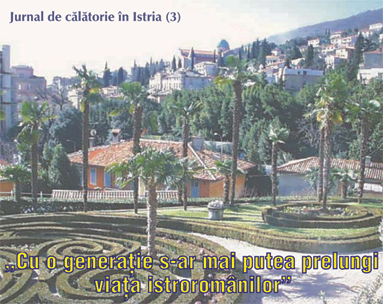
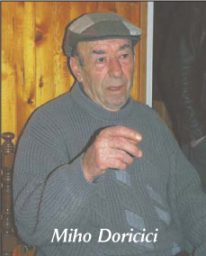
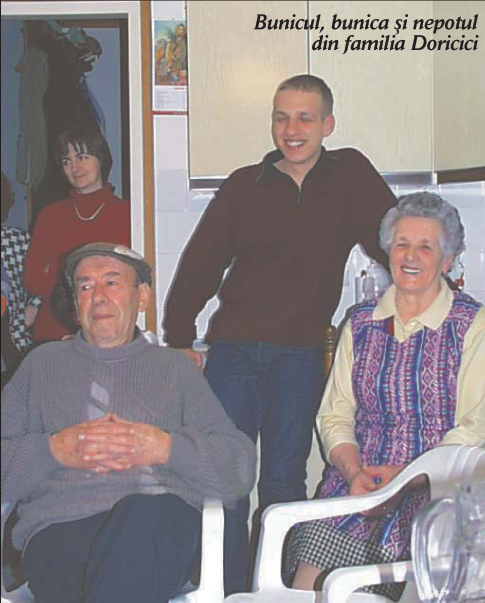
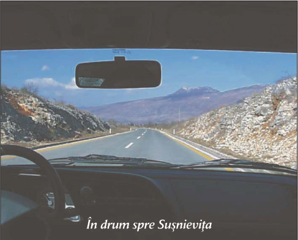
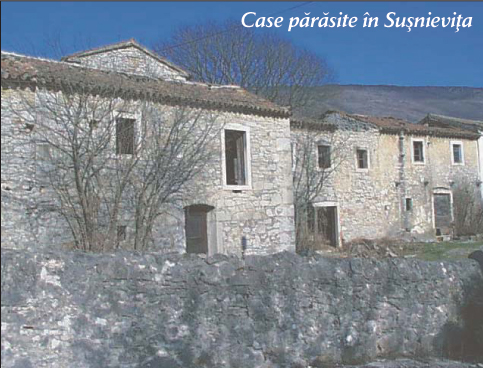
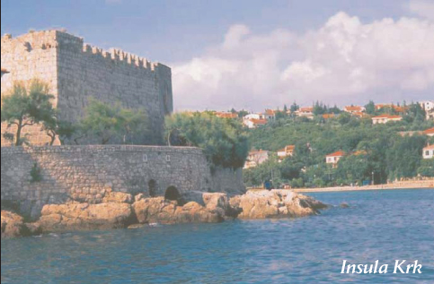

 – Când am făcut armata, m-am întâlnit cu români din Banat, din zona Vârșețului – ne-a povestit într-o seară Miho Doričić, care la cei circa 80 de ani ai lui vorbea o istroromână curată, folosind mult mai puține cuvinte preluate din croată decât generația mai tânără.
 – Atunci mi-am dat seama că eu sunt ca și ei, când i-am întrebat cum se zice la ei la cap. Mi-au zis: cap. Cum se zice la "mâră"? Mi-au zis "mână". Și încetul cu încetul ni s-a dovedit că aproape toate cuvintele de bază ni-s la fel, adică suntem de același neam.
 În casa familiei Doričić din Jeiani am avut parte și de o altă surpriză. Nepotul lui Miho, Robert, care este student la Facultatea de Medicină din Rijeka, vorbește binișor limba bunicilor și, mai mult, se străduiește în permanență să învețe cât mai bine istroromâna, un lucru ce nu prea îi caracterizează pe tinerii de origine istroromână din Istria. Dar, fiindcă nu există școli, instituții speciale, publicații, emisiuni la tv sau radio în limba lor, nu este de mirare că cei mai mulți tineri nu prea sunt atrași de rădăcinile lor.
În ultimul timp au apărut câteva cărți despre istroromâni, e adevărat că doar în limbile italiană sau croată. În cursul vizitei noastre în Istria, am și avut ocazia să cunosc doi astfel de scriitori, amândoi de origine istroromână. Ezio Bortul din Triest a publicat nu demult o carte cu titlul "Vlahi". El nu mai vorbește istroromâna, dar o înțelege destul de bine, și ne-a povestit despre numeroasele lui rude care s-au mutat în Statele Unite, înființându-și acolo o asociație și practicând limba maternă în familie și în cercuri prietenești. Apoi, l-am vizitat acasă la el, la Rijeka, pe renumitul scriitor Ezio Mestrovich, care a scris un roman intitulat "A Fiume, un’ estate," protagoniștii căruia sunt istroromâni. Din păcate, aceste cărți nu pot fi citite și în limba română.
 
În cursul discuției mele cu domnul Emil Petru Rațiu, președintele Asociației Culturale Istroromâne "Andrei Glavina," din care v-am publicat fragmente și în numărul trecut, am ridicat și problema legăturilor istroromânilor cu România și invers.
 Acești oameni sunt foarte fericiți când vine la ei cineva din România. Nu-i corect să se vorbească despre ei la trecut, nici atunci dacă satele lor s-au depopulat, acesta fiind un fenomen general în toată lumea. Dacă-i cauți însă bine poți să-i găsești. De exemplu, m-am uitat în cartea de telefoane de-aici, din Opatija, și am găsit 52 de Doričić, peste 50 de Turcovici, dar nu i-am numărat pe Stancovici, pe Bacici, pe Stanbulici. Dintr-odată sunt peste o sută de familii de istroromâni numai în această localitate. Dar sunt și mai mulți în orașul Rijeka. Deci, nu-i adevărat că istroromânii au dispărut. Sigur că sunt puțini, însă dacă ar fi să-i adunăm de peste tot, de la Trieste, din America, din Australia, ar fi câteva mii bune. Pericolul mare este acela al limbii, care, nefiind susținută prin nici o instituție, cum ar fi școala sau grădinița, din păcate, copiii încep să piardă limba. Deci, încă o dată accentuez: nu se poate vorbi despre istroromâni doar la trecut. Prezentul lor l-ați văzut, iar în ce privește viitorul... acesta este punctul cel mai nevralgic. După părerea mea, cu voința politică a autorităților române, situația lor ar putea fi îmbunătățită. Nu zic că vor trăi în eternitate, pentru că sunt puțini, iar globalizarea nu cruță aceste mici grupuri umane. Însă pentru o generație, pentru alți 50 de ani sau poate mai mult, am putea să le prelungim existența, viața lor. Dar asta numai atunci, dacă statul român ar avea minima voință ca să acționeze în acest sens.
Eva Iova
March 28, 2003
© 2003 Foaia Românească